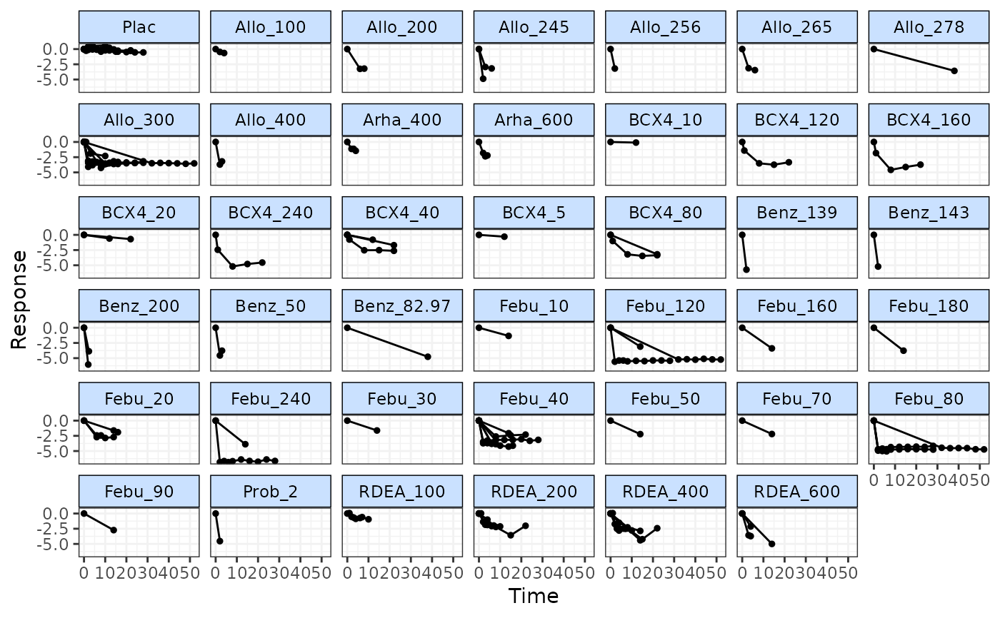
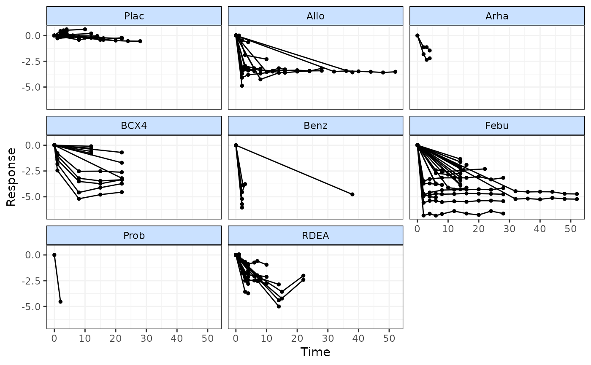
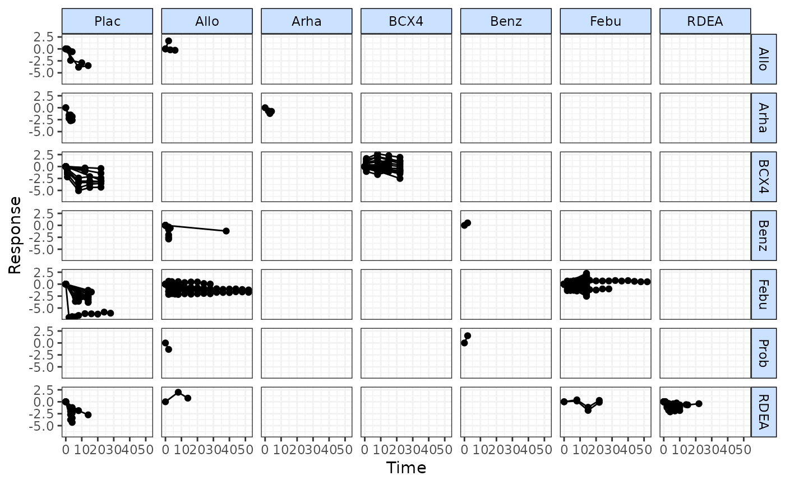
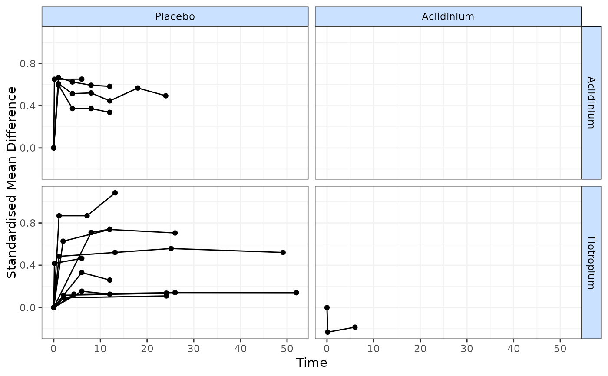

Plot raw responses over time by treatment or class
timeplot.RdPlot raw responses over time by treatment or class
Arguments
- network
An object of class
"mb.network".- level
A string indicating whether nodes/facets should represent
treatmentorclassin the plot. Can be used to examine the expected impact of modelling class/agent effects.- plotby
A character object that can take either
"arm"to indicate that raw responses should be plotted separately for each study arm, or"rel"to indicate that the within-study relative effects/treatment differences should be plotted. In this way the time-course of both the absolute effects and the relative effects can be examined.- link
Can take either
"identity"(the default),"log"(for modelling Ratios of Means friedrich2011MBNMAtime) or"smd"(for modelling Standardised Mean Differences - although this also corresponds to an identity link function).- ...
Arguments to be sent to
ggplot()
Value
The function returns an object of class(c("gg", "ggplot"). Characteristics
of the object can therefore be amended as with other plots generated by ggplot().
Details
Plots can be faceted by either treatment (level="treatment") or class
(level="class") to investigate similarity of treatment responses within classes/agents.
Points represent observed responses and lines connect between observations within the
same study and arm.
Examples
# \donttest{
# Make network
goutnet <- mb.network(goutSUA_CFB)
#> Reference treatment is `Plac`
#> Studies reporting change from baseline automatically identified from the data
# Use timeplot to plot responses grouped by treatment
timeplot(goutnet)

# Use timeplot ot plot resposes grouped by class
timeplot(goutnet, level="class")

# Plot matrix of relative effects
timeplot(goutnet, level="class", plotby="rel")

# Plot using Standardised Mean Differences
copdnet <- mb.network(copd)
#> Reference treatment is `Placebo`
#> Studies reporting change from baseline automatically identified from the data
timeplot(copdnet, plotby="rel", link="smd")

# }